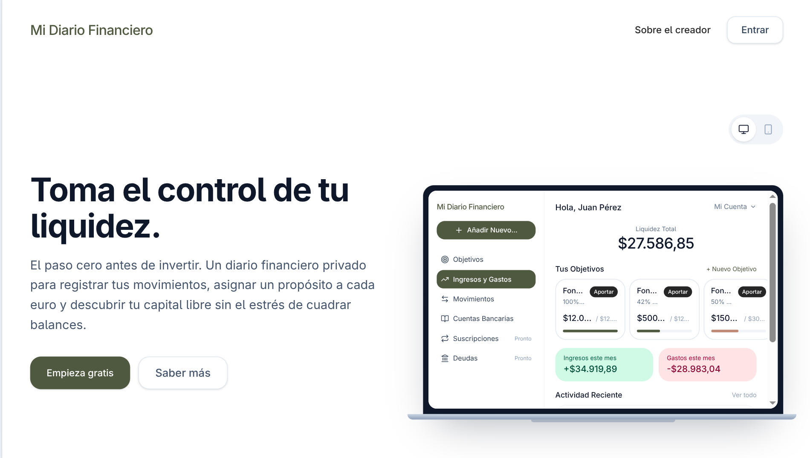

Emilio De La Peña Chacón
Backend Developer
About Me
I am a Backend developer based in Spain, specializing in the Java and Spring Boot ecosystem for creating robust, scalable, and efficient APIs.
My technical profile is based on solid projects, such as the development of a personal finance analysis platform. In this project, I apply Java 21 and Spring Boot, designing the API lifecycle with Swagger and Postman, and managing persistence with Hibernate, H2, and Docker containers for the database (PostgreSQL). Additionally, to maintain a complete product vision, I develop the client interface using React, TypeScript, and Vite.
This foundation is complemented by real experience working under agile methodologies. Recently, I have led the development of a social network assuming the roles of Backend Lead and Scrum Master, managing team ceremonies and orchestrating a fully containerized architecture with Docker, operating on a modern stack based on Node.js, TypeScript, NestJS, and Next.js.
What do I bring to the team?
Technical resolution with judgement: I feel especially comfortable facing complex logic problems and bugs that require technical depth and persistence.
Proactive Collaboration: My experience coordinating teams in national associations and managing operations under pressure at the airport has turned me into a reliable team member. I know how to listen, provide solutions, and be available to ensure the project flows smoothly.
Product Mindset: Thanks to my previous background, I understand that software is a tool to solve real problems. I design with maintainability and the value the end client will receive in mind.
I have recently completed the Multi-platform Application Development (DAM) degree and am backed by a C1 certification in technical English with work experience in English-speaking environments. I am looking to bring architectural rigor, clean code, and a problem-solving mindset to software engineering teams.
Proyecto Destacado
App web: Mi Diario Financiero
Herramienta limpia y segura para llevar el registro de finanzas personales y tomar mejores decisiones financieras.

Más proyectos
Zookeeper (Java)
Console application simulating a zoo camera monitoring system, utilising Java text blocks to render complex ASCII art animations.
Battleship Game (PvP) (Java)
Classic command-line implementation of the Battleship game, focused on backend logic and 2D array manipulation.
Aerotaxi Web Simulation (Python)
Aerotaxi reservation simulation for trips within Spain in under 2 hours.
Cinema Room Manager (Java)
Console application to manage cinema seating arrangements, ticket purchases, and occupancy/revenue statistics.
Shop Net Income Calculator (Java)
Simple console application to track shop earnings, record expenses, and calculate net income.
Experiencia Profesional
Backend & Scrum Master
Alicante Futura Lab (Prácticas) | 02/03/26 al 01/06/26
Desarrollo de arquitectura backend y coordinación de equipo ágil, con apoyo en el desarrollo frontend.
Stack: Node.js, TypeScript, NestJS, PostgreSQL, Supabase, Prisma, React, Vite, Docker.
Logros Técnicos
- Diseño e implementación de un sistema de gestión de contenedores Docker orquestado directamente desde el backend utilizando Dockerode.
- Establecimiento de una cultura de desarrollo Review-First e integración de flujos de trabajo AI-Driven, asegurando auditoría humana estricta y gestión de ramas por tareas en GitHub Projects.
- Refactorización del sistema de internacionalización (i18n): Escalado del proyecto de 1 a 4 idiomas (Inglés, Español, Francés e Italiano) gestionando la lógica tanto en frontend como en backend con i18next.
Liderazgo y Gestión Ágil
- Liderazgo de un equipo multidisciplinar de 5 desarrolladores aplicando el marco de trabajo Scrum.
- Gestión del cambio y pivotaje estratégico: Recálculo de ruta técnica durante un cambio de alcance a mitad del desarrollo, manteniendo el alineamiento del equipo y la velocidad de entrega.
- Pitching corporativo: Estructuración de la narrativa técnica frente a stakeholders e inversores, traduciendo decisiones de arquitectura complejas en valor de negocio.
Habilidades Técnicas
Core Backend (Especialidad)
- Java 21 y Spring Boot: Creación de APIs REST con arquitectura limpia, gestionando la inyección de dependencias y optimizando el código mediante Lombok.
- Seguridad y Autenticación: Implementación de capas de seguridad robustas mediante Spring Security y control de sesiones sin estado utilizando tokens JWT (Json Web Tokens).
- Persistencia y Validación: Integración de Spring Data JPA e Hibernate para la abstracción de datos con PostgreSQL y H2, aplicando reglas estrictas de validación en los DTOs y controladores mediante Spring Boot Starter Validation.
- Documentación y Calidad: Automatización de la documentación interactiva de la API con Springdoc OpenAPI UI (Swagger).
Ecosistema Moderno y Fullstack
- Arquitectura Node.js: Desarrollo backend estructurado y tipado utilizando TypeScript, NestJS y Prisma ORM.
- Desarrollo Frontend: Creación de interfaces de usuario reactivas y componentes modulares con React, Vite y Next.js.
Infraestructura y Herramientas
- Contenerización con Docker: Diseño de entornos de desarrollo aislados y orquestación de arquitecturas contenerizadas (frontend, backend y bases de datos).
- Entorno Linux y Git: Gestión avanzada de sistemas en la terminal (usuario diario de Fedora) y control de versiones con flujos de trabajo basados en ramas en GitHub.
Metodologías e Inteligencia Artificial
- Gestión Ágil (Scrum): Experiencia ejerciendo como Scrum Master y Backend Lead, coordinando equipos multidisciplinares, gestionando ceremonias ágiles (Dailys) y organizando flujos de trabajo en GitHub Projects.
- Metodología SDD (Spec-Driven Development) con IA: Desarrollo guiado de forma estricta por las especificaciones iniciales, historias de usuario y contratos de la API. Este enfoque sirvió de guardarraíles técnico al trabajar con asistentes de Inteligencia Artificial, asegurando que tanto la IA como el desarrollo manual se mantuvieran fieles a los requisitos de negocio y de arquitectura planificados, permitiendo reevaluar cambios con criterio técnico.
Formación y Certificaciones
Técnico Superior en Desarrollo de Aplicaciones Multiplataforma (DAM)
Digitech FP | 2024 – 2026
Graduado en Nutrición Humana y Dietética
Universidad de Alicante | 2018 – 2022
Certificación de Inglés Avanzado (C1 Advanced)
Cambridge Assessment English